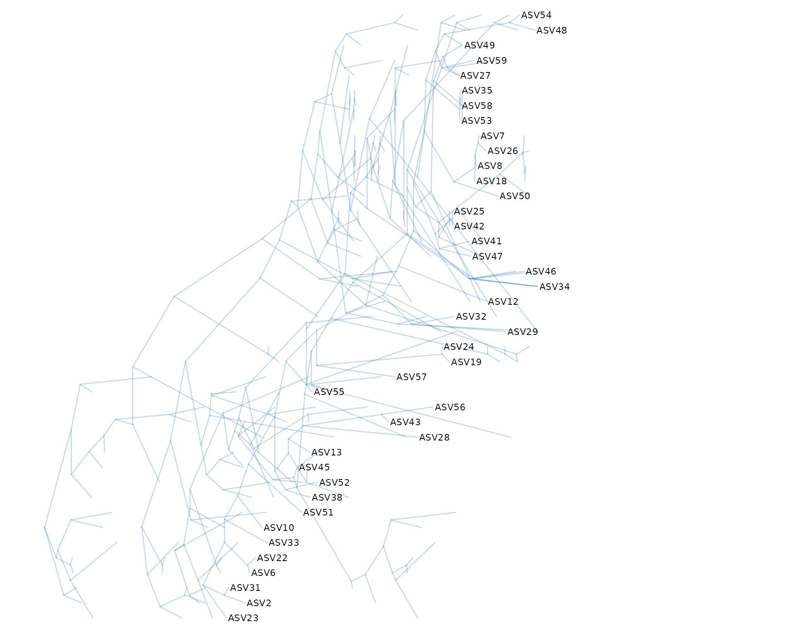
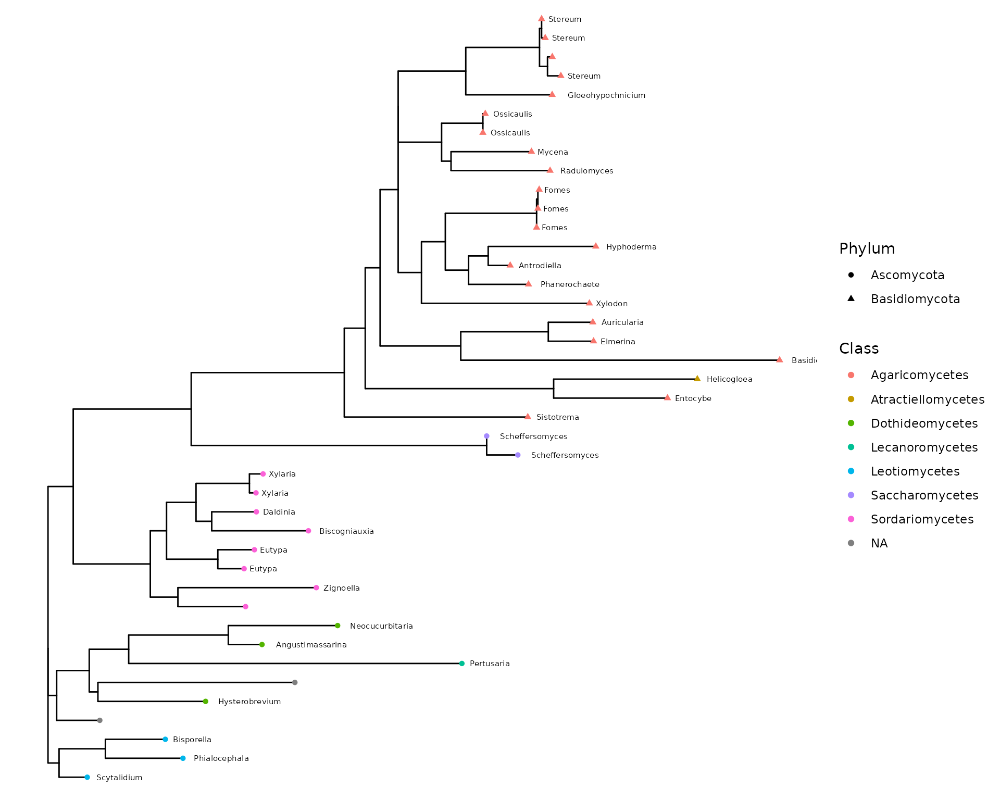
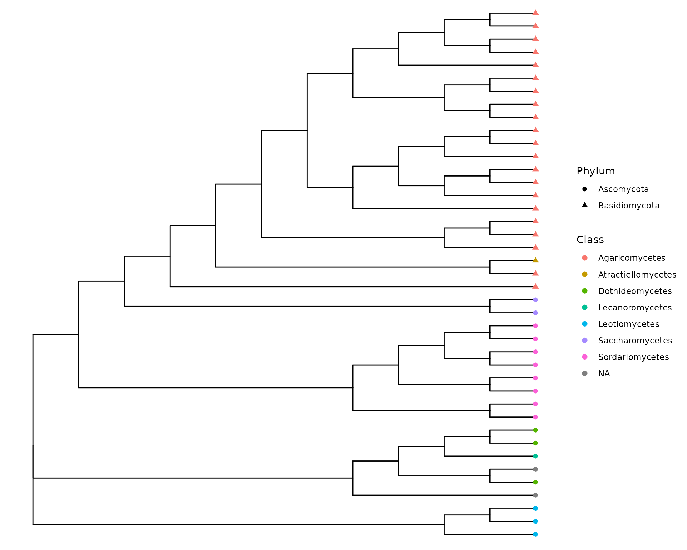

library("tidytree") # first load to disable warning about phylo class
library("MiscMetabar")
library("phangorn")
df <- subset_taxa_pq(data_fungi, taxa_sums(data_fungi) > 9000)
df_tree <- quiet(build_phytree_pq(df, nb_bootstrap = 5))
data_fungi_tree <- merge_phyloseq(df, phyloseq::phy_tree(df_tree$ML$tree))
library("treeio")
library("ggtree")
ggtree(data_fungi_tree@phy_tree, layout = "ellipse") + geom_tiplab()
ggtree(as.treedata(df_tree$ML), layout = "slanted")
ggdensitree(df_tree$ML_bs, alpha = .3, colour = "steelblue") +
geom_tiplab(size = 3) + hexpand(.35)
ggtree(as.treedata(df_tree$ML)) +
geom_text(aes(x = branch, label = AA_subs, vjust = -.5), size = 1)
tax_tab <- as.data.frame(data_fungi_tree@tax_table)
tax_tab <- data.frame("OTU" = rownames(tax_tab), tax_tab)
p <- ggtree(as.treedata(data_fungi_tree@phy_tree)) %<+%
tax_tab
p + geom_tippoint(aes(color = Class, shape = Phylum)) +
geom_text(aes(label = Genus), hjust = -0.2, size = 2)
ggtree(as.treedata(data_fungi_tree@phy_tree), branch.length = "none") %<+%
tax_tab +
geom_tippoint(aes(color = Class, shape = Phylum), size = 2)